Umbrageous 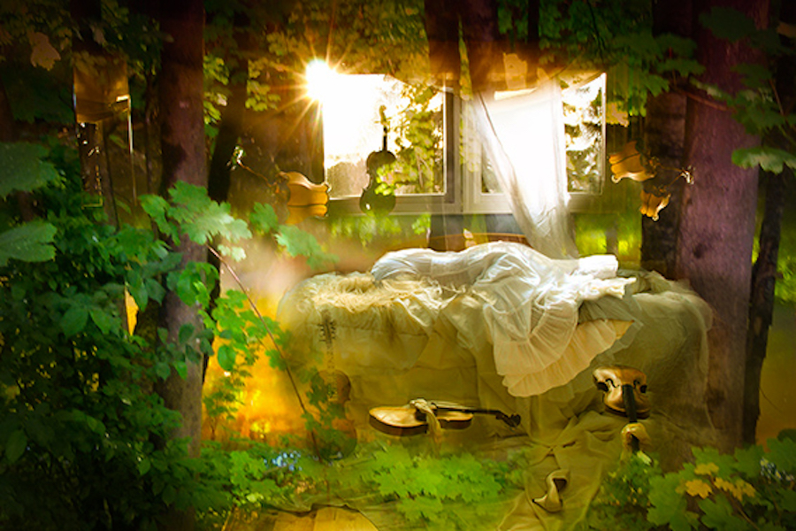
by Mamta B. Herland
06/18/2021
Bush 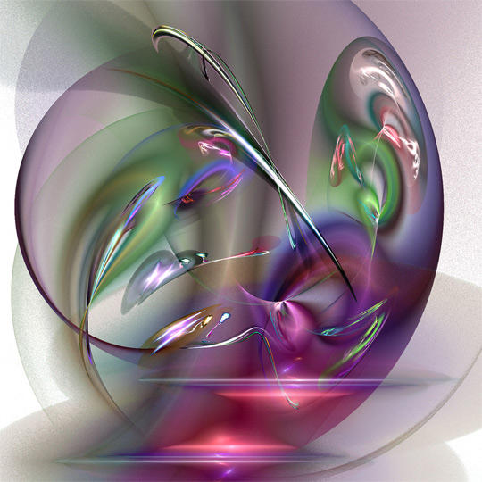
by Renata Spiazzi
06/19/2021
Traps
by Masanta
an art of high spirits
06/20/2021
 |
 |
Composition 51 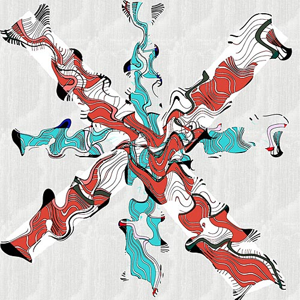
Storysation 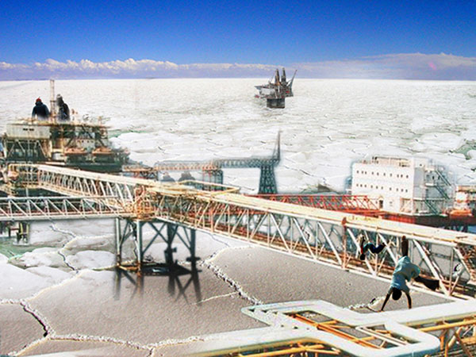
Between the Earth and the Sky 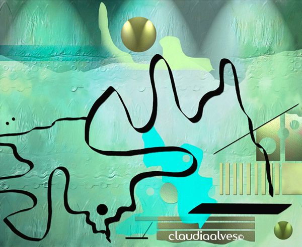
French Urban Diversity 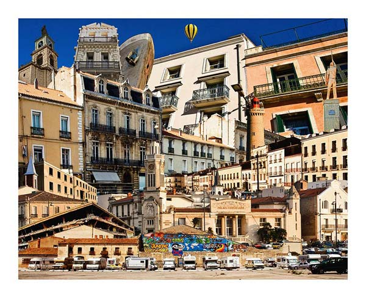
Fractal 06_04
Stonehenge 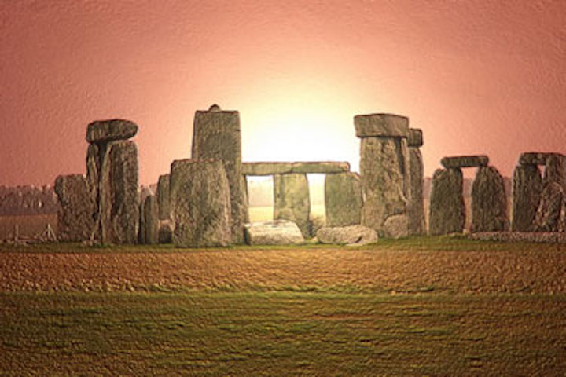
The Mask 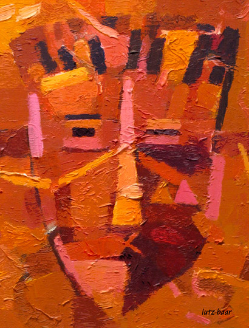
WW in Motion 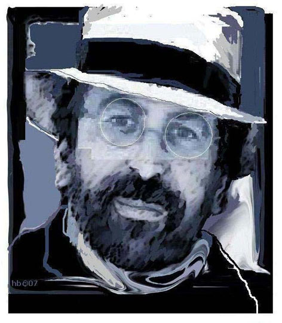
I was Born to Tell You I Love You 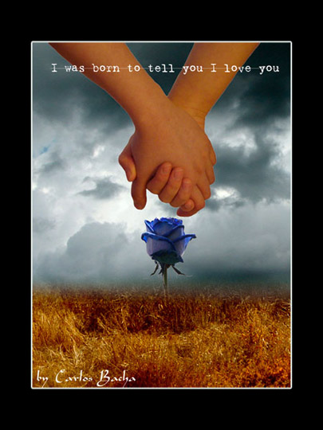
Adam's Rib 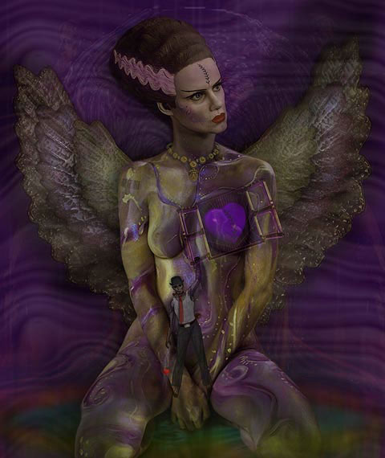
by Gerhard Scholz
06/21/2021
by Mannisi Alban
06/22/2021
by Claudia Alves
06/23/2021
by Michael P. Ammel
06/24/2021
Don Archer
06/25/2021

by Dark Arya
06/26/2021
by Lutz Baar
06/27/2021
by Helen Babis
06/28/2021
by Carlos Bacha
06/29/2021
by Sam Bahreini
06/30/2021